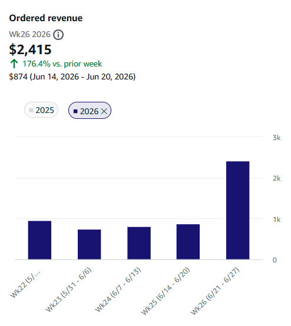
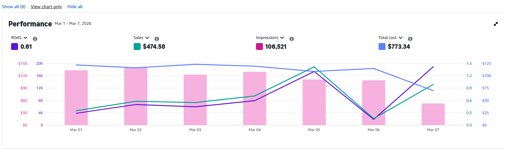

Control PPC
Revisé campañas por objetivo, consulta y producto; separé exploración, defensa y captura para reducir lecturas mezcladas.
Amazon Account Management · Technical Case
Una explicación técnica de cómo conecté publicidad, disponibilidad, promociones y contenido para pasar de ajustes aislados a una cadencia operativa semanal.
01
Cuenta de Amazon de Daizzy Gear trabajada entre marzo y junio de 2026. El archivo incluye capturas de Amazon Ads, inventario, promociones, A+ Content, Brand Store e ingresos semanales por pedidos.
El +176,4% describe una sola comparación semanal y no debe interpretarse como crecimiento sostenido ni como resultado causal aislado.
02
La cuenta no necesitaba solamente mejores pujas. El rendimiento dependía de que presupuesto, stock, elegibilidad promocional, calidad del catálogo y contenido estuvieran coordinados. Publicitar un producto sin inventario sano o sin soporte de conversión podía consumir presupuesto sin construir una mejora sostenible.
Audité el rendimiento publicitario por campaña y producto, las señales de baja eficiencia, la disponibilidad de inventario y la preparación promocional. La lectura técnica partió de una semana de marzo con ROAS 0,61, US$773,34 de costo y US$474,58 en ventas atribuidas, sin usar esa captura como línea base causal de junio.
03
Audité y reestructuré PPC, definí criterios de asignación presupuestaria, coordiné promociones y contenido, y conecté decisiones publicitarias con inventario y catálogo. Los pagos, la disponibilidad física y aprobaciones de Amazon dependían de la marca y la plataforma.
04
Revisé campañas por objetivo, consulta y producto; separé exploración, defensa y captura para reducir lecturas mezcladas.
Definí dónde sostener, recortar o escalar inversión según margen, stock, historial y capacidad de conversión.
Coordiné promociones, cupones y soporte de Prime con disponibilidad e intención de liquidación de inventario antiguo.
Implementé mejoras de A+ Content, Brand Store y catálogo para que la publicidad llegara a una experiencia coherente.
Organicé una revisión repetible del rendimiento, el inventario, las incidencias y los próximos movimientos.
NOTA TÉCNICA
Las decisiones se conectaron en cuatro capas operativas; estos son los criterios aplicados.
La optimización se hizo a nivel de campaña, término y producto. La decisión no fue bajar ACOS de forma uniforme, sino asignar una función a cada campaña: descubrimiento, captura, defensa o soporte promocional.
Analicé términos con gasto sin ventas, consultas con señal de conversión y solapamiento entre campañas. Las negativas y ajustes de puja se usaron para dirigir tráfico, no como limpieza automática.
Antes de escalar, verifiqué disponibilidad y riesgo de quiebre. El presupuesto debía favorecer productos capaces de capturar demanda y evitar acelerar referencias con restricción de stock.
Cupones y descuentos se planificaron según objetivo: capturar eventos, apoyar conversión o liberar inventario antiguo. Una promoción sin stock, margen o tráfico adecuado no era una intervención completa.
Actualicé módulos, comparativas y recursos visuales para aclarar las diferencias entre productos y sostener las campañas. El contenido funcionó como infraestructura de conversión, no como decoración.
Incluí seguimiento de elegibilidad, variaciones, información de producto y problemas de cuenta porque estos bloqueos pueden invalidar una estrategia publicitaria correcta.
EVIDENCIA


05
Los ingresos semanales por pedidos pasaron de US$874 a US$2.415 entre el 14–20 y el 21–27 de junio de 2026. El +176,4% documenta una recuperación puntual semana contra semana; no se presenta como crecimiento sostenido ni como efecto causal aislado de una sola táctica.
Fuente: Amazon Seller Central — image_076.png; Amazon Ads — image_048.png
06
La gestión técnica de Amazon exige optimizar restricciones, no solo campañas. La mejor decisión publicitaria puede ser no escalar hasta resolver stock, catálogo, margen o contenido; y la mejor mejora de contenido puede fracasar si el tráfico no corresponde a la intención.
Próximo paso
Puedo auditar PPC, inventario, promociones y contenido como un sistema operativo semanal, con decisiones y límites explícitos.